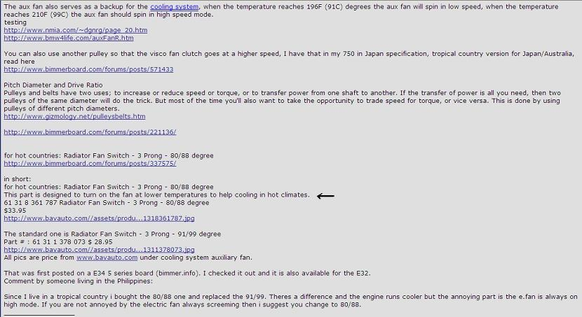
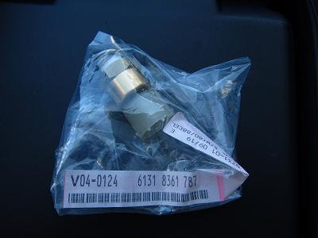
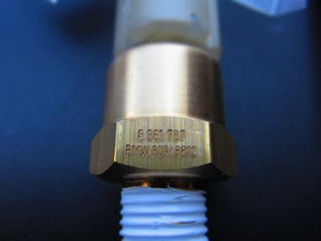
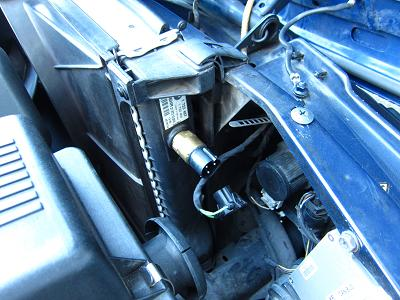
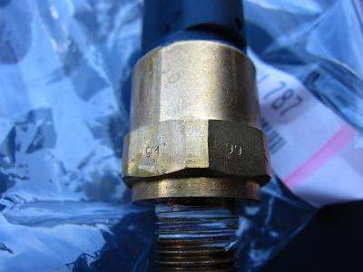
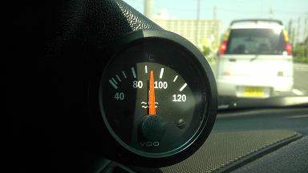

 そんな中、Bimmerforums.comを見ていると上の画像にある書き込みを見つけた。 この記事から分かったことは、電動ファンのLO/HIを切り替えるセンサーには91/99℃で作動する物と80/88℃で作動するものがあるということ。 「低温（80/88℃）で作動するものは、暑い地方の車両に使われていて冷却を補助している」これが←の部分だ。 親切に部品Noと写真のURLまで記載されている^^! ありがとー！ これを使えば、水温91℃で電動ファンがLOで回転、99℃になるとHIで回転していたものが、LO80℃/HI88℃になって早めに冷却してくれそうだ！   品番から調べてみると、ネジピッチもE34の物と同じでポン付けできそうだった。 早速取り寄せたのがこれだ。（No:61318361787） カプラーが白い以外にE34の物と違いは無い。 このセンサーはE36 318iに使われているようだ。 本体に80/88℃と刻印されている。
|
  交換作業に移ろう。 センサーはラジエターの側面に刺さっている。 外した物には91/99℃の刻印がある。
|
 交換後は、以前なら温度が上がっていたであろう状況でも、針が真ん中で安定している。 この辺りの水温で電動ファンを見てみると、HI側で回転していた。 ＬＯとは明らかに違う風量だ！これなら冷えてくれそうだ。 とりあえずは解決したが、根本から解決したわけではない。 もうしばらく経過を追って観察していこうと思う。
|